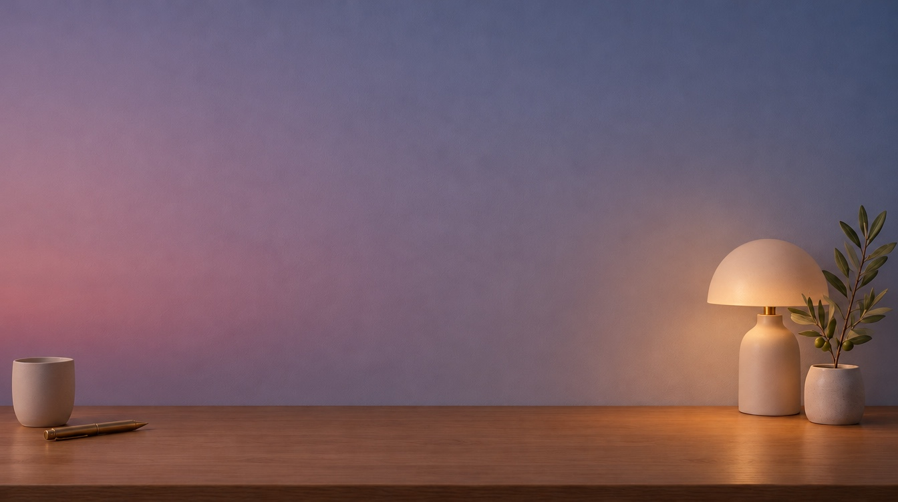

The year you plan
The Sanctuary Calendar
Twelve loose sheets on a birch board, for people who plan their month with intent. Each one turns over into a journal page, and its picture tears off as a postcard to send or keep.
January